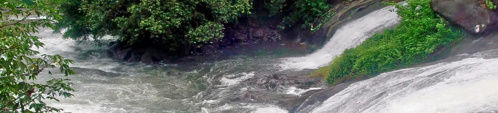

Experience A Slice Of Heaven In Kerala With These Top Malappuram Tourist Places
1. Kodikuthimala
Another attraction of Malappuram that is often compared to the famous town of Ooty, Kodikuthimala is definitely a sight for the sore eyes. A hill station of Kerala, the place is perched on a height of about 522 m above sea level, and is the highest point in the Amminikkadan hills.
Timings: No time.
2. Arimbra Hills
Arimbra Hills or Mini Ooty is one of the most scenic places to visit in Malappuram. The place is called mini Ooty because of its resemblance to the hill station of the same name, and a rather famous one at that.
Timings:No time.
3.Keralamkundu Waterfalls
A basin at the base of waterfalls where people can enjoy a dip in the pond is something everyone wants to have an experience. Keralam Kundu Waterfalls are undoubtedly the best of all Malappuram Tourist Places, and that is why people keep flocking here to have an experience of the mystical.
Timings:Everyday 8:30 to 6 PM
4. Mamburam
A famous Muslim Pilgrimage in the Malappuram district, Mamburam is a shrine dedicated to the dead bodies of some of the primary Thangals of Kerala. It was a title given to the Arabs from Yemen who scattered from there and migrated to Kerala.
Timings: All day
5. Nilambur Teak Museum
Nilambur is famous for their teak produce, which is a kind of tree used for woodwork and is easily available throughout the country. Kerala, however, is one of the biggest providers of teak in the country, and this museum in the Nilambur district is entirely dedicated to the history of the wood.
Timings :Tuesday to Sunday, 10 AM to 5 PM.